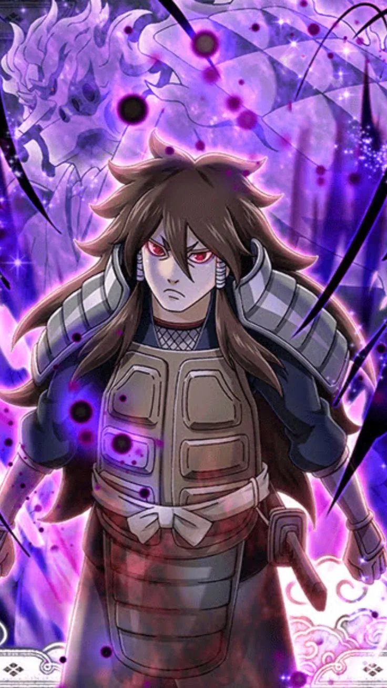
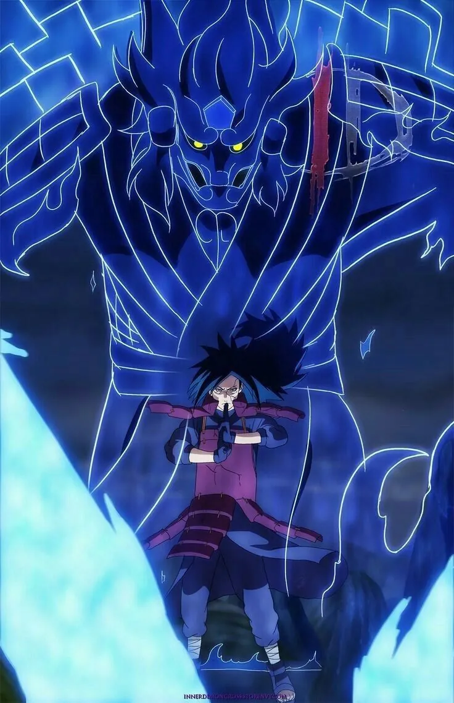
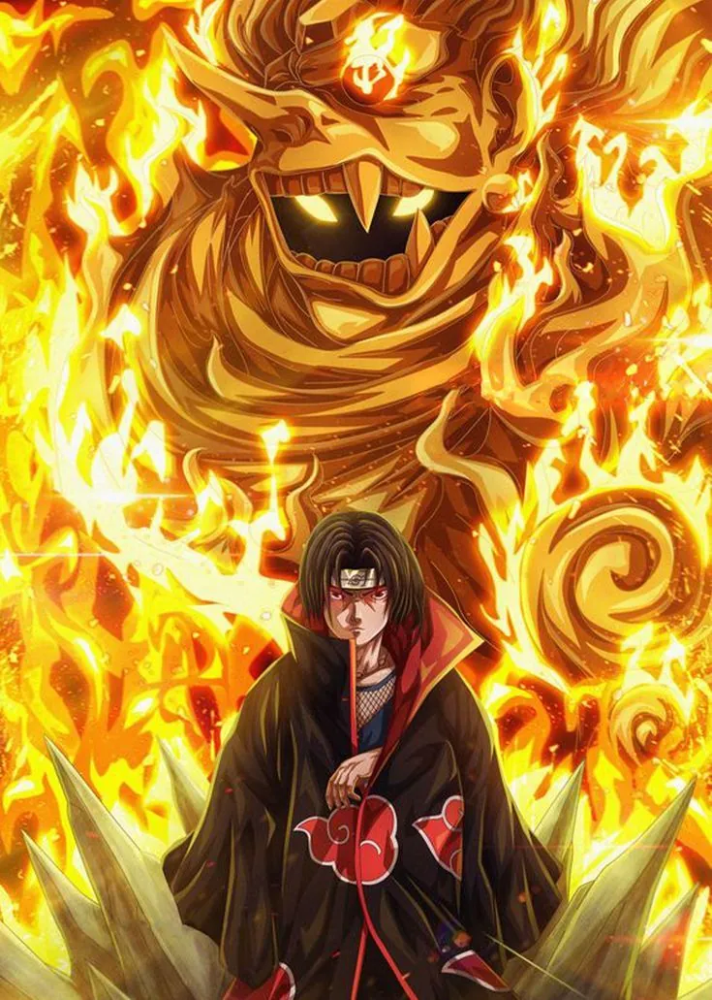
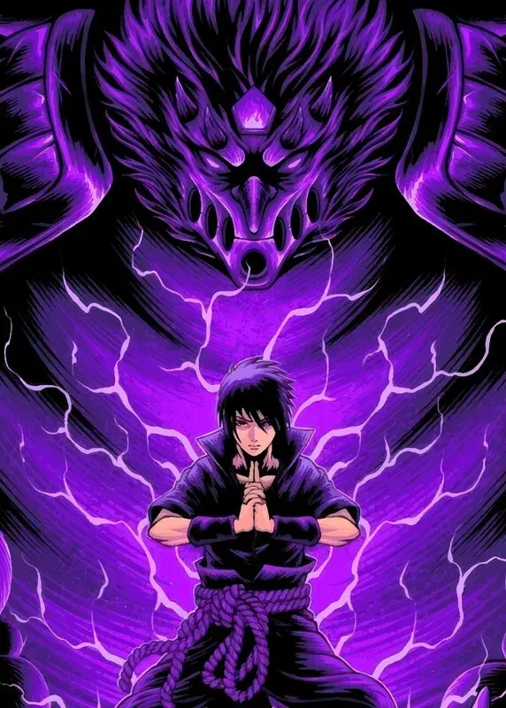
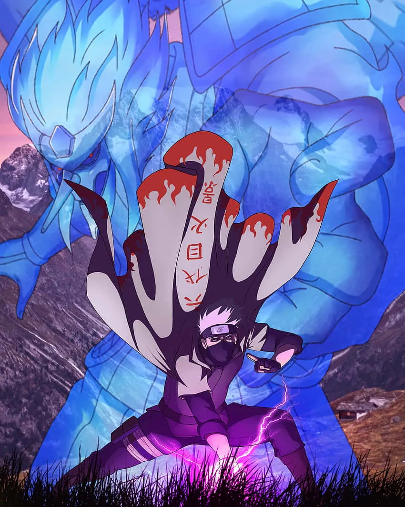

Naruto Shippuden
Susanoo en Naruto

Un jutsu ocular
En Naruto Shippuden el Susanoo aparece como un jutsu ocular que solo pueden usar quienes despiertan el Mangekyō Sharingan, una forma avanzada del Sharingan. Rodea al usuario con un gigantesco guerrero espiritual que lo protege de casi cualquier daño y que también sirve para atacar.
Es una de las técnicas más poderosas y temibles del mundo de Naruto, y muy pocos ninjas son capaces de dominarla. En la imagen de arriba aparecen los Susanoo de tres de los ninjas más poderosos del anime: Itachi, Madara y Sasuke Uchiha.
El Susanoo puede tener armas distintas según el usuario, como espadas, arcos, flechas o lanzas. Además, se vuelve más fuerte y resistente a medida que el usuario lo practica y lo perfecciona.
El caso de Sasuke es el más claro: su Susanoo evoluciona a lo largo de la serie, de una forma básica a una mucho más avanzada que le permite enfrentarse a enemigos muy peligrosos.
Usuarios del Susanoo en la serie
-

Indra Ōtsutsuki
El primer usuario del Susanoo y ancestro del clan Uchiha.
-

Madara Uchiha
Domina el Susanoo Perfecto, capaz de partir montañas.
-

Itachi Uchiha
Su Susanoo porta la Espada de Totsuka y el Espejo de Yata.
-

Sasuke Uchiha
Su Susanoo evoluciona durante la serie y dispara flechas de chakra.
-

Kakashi Hatake
Lo usa en la Cuarta Guerra Ninja gracias al poder que le da Obito.
 El dios original
El dios original
 Galería
Galería